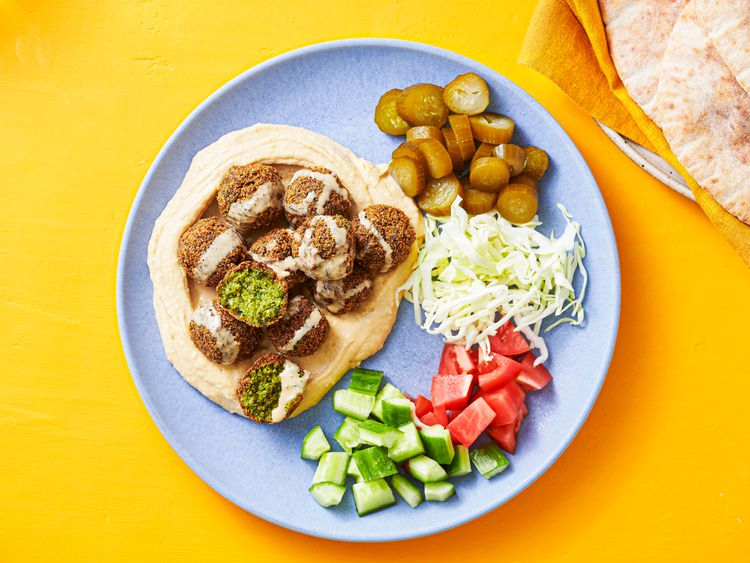

Falafel

Descritpion
Crisp on the outside, light and fluffy on the inside, and packed with herb and spice flavor.
Total time: around 9h. Prep: 30 min. Active time: 20 mins. Soaking time: 8h Servings: 4 servings
Ingredients:
- 1/2 pound dried chickpeas (1 generous cup; 225 g)
- 2 ounces picked fresh cilantro, parsley, or mint leaves, or preferably a mixture of all three (about 2 cups; 55 g)
- 6 scallions, white and pale green parts only, sliced (about 2 ounces; 55 g)
- 2 medium cloves garlic, minced (about 2 teaspoons; 10 ml)
- 1 teaspoon (about 4 g) ground cumin
- 1/2 teaspoon (about 2 g) ground coriander seeds
- 2 teaspoons (about 10 g) kosher salt, plus more for seasoning
- 2 to 3 cups (480 to 720 ml) vegetable oil, for frying
- Tahini sauce, hummus, and/or zhug (Yemenite hot sauce) for serving
Directions
- Rinse chickpeas and place in a large bowl. Cover with cold water, adding enough to allow the chickpeas to at least triple in volume. Cover and let stand at room temperature overnight. The next day, drain, rinse, and carefully dry chickpeas in a salad spinner.
- Combine chickpeas, herbs, scallions, garlic, cumin, coriander, and salt in the work bowl of a food processor. Pulse until chickpeas are very finely minced, stopping the food processor to scrape down the sides as necessary. A handful of the mixture squeezed into a ball should be able to barely hold together. If not, process a little more.
- Transfer mixture to a bowl, cover, and place in refrigerator for 15 minutes to allow time for more starch to seep out of chickpeas. This will help the balls retain their shape better once formed. Using a tablespoon measure, scoop out heaping spoonfuls of the mixture into your hand. Gently shape each into a ball (you will not be able to roll the mixture like cookie dough; this is okay) and place them on a clean plate.
- When all the balls have been formed, fill a deep cast iron, carbon steel, or nonstick skillet or Dutch oven with 3/4 inch of oil. Heat over high heat until oil registers 375°F (190°C) on an instant-read thermometer. Carefully lower chickpea balls into oil one at a time, allowing a little space between each ball and cooking in batches if necessary. Adjust heat as necessary to maintain a temperature of between 350 and 375°F (175 and 190°C). Allow to cook undisturbed until well browned on bottom sides, then carefully flip balls with a fork until browned on second side, about 4 minutes total. Transfer cooked chickpea balls to a paper towel–lined plate and season with salt. Repeat with remaining chickpea balls.
- Serve immediately with tahini and/or hummus on the side, or stuffed into pita bread with tahini, tomatoes, cucumber, pickles, and shredded cabbage.
Link to original recipe
Home